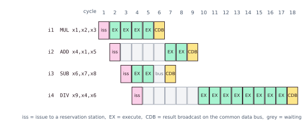
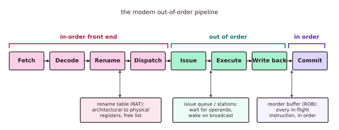

Chapter 3: Out-of-Order and Superscalar Execution¶
Pipelining overlaps instructions but still issues them in program order, so one slow instruction, such as a cache miss or a long divide, freezes everyone behind it. The high-performance core's answer is to look ahead in the instruction stream, find work that does not depend on the stalled instruction, run it early, and put the results back in order at the end. This chapter builds that machine from the ground up: why in-order execution stalls, what a false dependence is, how register renaming removes it, the two classic dynamic-scheduling algorithms (the scoreboard and Tomasulo's algorithm), the reorder buffer that keeps exceptions precise, speculation past branches, and finally the ways real cores widen and fill the machine: superscalar issue, VLIW and simultaneous multithreading.
You should already know the material of Chapter 2: hazards, the three kinds of register dependence, forwarding and branch prediction.
3.1 The cost of a single stall¶
An in-order pipeline obeys one iron rule: instruction \(i+1\) may not overtake instruction \(i\). That keeps the hardware simple, but it couples latency to throughput. The moment an instruction cannot make progress, most often because it is waiting for a value from memory, every younger instruction is held behind it, even if their operands are ready and their execution units are idle.
lw x1, 0(x2) # the load misses in L1: about 12 cycles to L2, or about 200 to DRAM
add x3, x1, x4 # TRUE dependence on x1: it really must wait
sub x6, x7, x8 # independent! could run now, but in-order forbids it
or x9, x10, x11 # independent! also stuck behind the miss
mul x12, x13, x14 # independent! also stuck
The add genuinely depends on the load. But sub, or and mul have nothing to do with x1. In an in-order core they stall anyway and burn the whole miss latency doing nothing. Think of a supermarket queue where the first customer's card is declined: everyone behind waits, even the person holding only a bottle of water and exact change.
Out-of-order (OoO) execution, also called dynamic scheduling, breaks the coupling. The core keeps a pool of decoded instructions, the instruction window (tens to hundreds of entries in modern cores), and each cycle starts any instruction whose operands are available and whose execution unit is free, whatever its position in the program. While the load misses, sub, or and mul execute, and their latency is hidden beneath the miss. This ability to keep busy during a long wait is called latency tolerance, and it is the single biggest reason a modern OoO core outruns an in-order one on real code.
The bigger the window, the more independent work the core can find. But a bigger window costs chip area and power, since every entry must be watched every cycle.
3.2 True and false dependences¶
Before running anything early the core must know which reorderings are legal. Three kinds of dependence constrain two instructions that touch the same register.
| Type | Also called | Pattern | Kind |
|---|---|---|---|
| RAW | true or flow dependence | write x1 ... read x1 |
True: data really flows; nothing can remove it |
| WAR | anti-dependence | read x1 ... write x1 |
False: only the register name is shared |
| WAW | output dependence | write x1 ... write x1 |
False: only the register name is shared |
A RAW dependence is the fundamental limit on instruction-level parallelism: the second instruction genuinely needs the value the first produces, so no cleverness lets it run first. WAR and WAW are name dependences. They exist only because two instructions happen to reuse the same architectural register name, an artefact of an ISA that has only 32 names (in RISC-V), which compilers reuse as scratch space.
(i1) add x1, x2, x3 # writes x1
(i2) sub x4, x1, x5 # reads x1 -> RAW with i1 (true: keep the order i1, i2)
(i3) mul x1, x6, x7 # writes x1 again -> WAW with i1, WAR with i2 (false!)
(i4) div x8, x1, x9 # reads the new x1 -> RAW with i3 (true)
The result of i3 has nothing to do with that of i1. Only the shared name x1 stops i3 from running early: if it ran first it would overwrite the x1 that i2 still needs (WAR), and it could be overwritten by i1 later (WAW). Give i3's result a different home and both problems disappear.
3.3 Register renaming¶
The ISA exposes a small set of architectural registers (32 integer registers in RISC-V). Inside, the core has a much larger physical register file, often 128 to 300 entries. A rename table, also called the register alias table (RAT), records which physical register currently holds each architectural one. Every instruction that writes a register is handed a fresh physical register from a free list; readers consult the table to find where their input lives. Since every write lands in a brand-new register, two writes never collide. WAW and WAR simply cannot occur, and only RAW, the real data flow, remains.
A cloakroom is a good model: your coat is not stored "on hook 3 because you are guest 3"; you get a fresh ticket each time, so two guests called Sam never mix up their coats.
Example 3.1: renaming the four instructions
The free physical registers are p10, p11, p12, p13, and so on. The RAT starts with x1 mapped to p1, x2 to p2, ..., x9 to p9.
| Architectural | Rename action | Renamed | |
|---|---|---|---|
| i1 | add x1,x2,x3 |
sources x2 to p2, x3 to p3; destination x1 takes new p10 | add p10,p2,p3 |
| i2 | sub x4,x1,x5 |
source x1 is now p10; x5 to p5; destination x4 takes p11 | sub p11,p10,p5 |
| i3 | mul x1,x6,x7 |
sources p6, p7; destination x1 takes a new home, p12 | mul p12,p6,p7 |
| i4 | div x8,x1,x9 |
source x1 is now p12; x9 to p9; destination x8 takes p13 | div p13,p12,p9 |
After renaming, i1 writes p10 and i3 writes p12: different registers. The WAW (i1 and i3) and the WAR (i2 and i3) are gone. i3 and its dependent i4 can run the instant x6 and x7 are ready, completely independent of the i1-to-i2 chain. The two chains proceed in parallel.
When does a physical register come back? When an instruction that wrote x1 is finally confirmed (committed), the previous home of x1 can no longer be needed by anyone, so that old physical register returns to the free list. As long as instructions commit in order, the core does not run out of homes for long. How "committed in order" works is the subject of Section 3.5.
3.4 Dynamic scheduling: the scoreboard and Tomasulo's algorithm¶
Renaming tells us which reorderings are legal. A dynamic scheduler is the hardware that tracks readiness and dispatches instructions out of order. Two classic designs define the field.
The scoreboard (CDC 6600, 1964)¶
The CDC 6600 had a central bookkeeper, the scoreboard, which tracked every functional unit and every register. It splits the old single "issue" step into four: issue, read operands, execute and write result. Instructions could execute out of order, a first in computing history. But the scoreboard does not rename: on a WAW hazard it stalls at issue, and on a WAR hazard it stalls at write-back until earlier readers have read the old value. It also did not forward results between instructions.
Tomasulo's algorithm (IBM 360/91, 1967)¶
Robert Tomasulo's design for the IBM 360/91 is the ancestor of nearly every out-of-order core today. It adds three ideas.
- Reservation stations. Waiting areas in front of each functional unit. An instruction waits there holding the operands it already has. There are more stations than units, so instructions can wait for operands without blocking issue. The structure is distributed rather than central.
- Tags, not names. When an instruction issues, each operand is either the value (if ready) or the tag of the station that will produce it. This renames registers implicitly and removes WAR and WAW hazards, exactly as a physical register file does.
- The common data bus (CDB). When a unit finishes, it broadcasts (tag, value). Every station and register waiting for that tag grabs the value in the same cycle. This tag-based wakeup provides forwarding for free.
A deli counter is the picture: you do not wait for "the person before you", you wait for your ticket number to be called, and anyone holding that number steps forward.
Example 3.2: a Tomasulo timeline
Assume one instruction issues per cycle, MUL takes 4 execution cycles, ADD and SUB take 2, DIV takes 8, there are enough reservation stations, and there is one CDB (one broadcast per cycle).
i1: mul x1, x2, x3
i2: add x4, x1, x5 # needs i1
i3: sub x6, x7, x8 # independent
i4: div x9, x4, x6 # needs i2 and i3
| Instruction | Issue | Execute | Broadcast | Why |
|---|---|---|---|---|
| i1 mul | 1 | 2 to 5 | 6 | Operands are ready at issue; 4 execution cycles |
| i3 sub | 3 | 4 to 5 | 7 | Independent, so it runs before i2. The bus is busy in cycle 6 with i1's result, so it broadcasts in 7 |
| i2 add | 2 | 7 to 8 | 9 | Woken by i1's broadcast in cycle 6, executes next cycle, 2 cycles |
| i4 div | 4 | 10 to 17 | 18 | Needs i2 (cycle 9) and i3 (cycle 7); starts after the later of the two |
The table is sorted by when each instruction executes: i3 overtakes the older i2, which is still waiting for the multiply. Each result appears on the CDB and instantly wakes its consumers by tag: i1 wakes i2, and i2 together with i3 wake i4. The single CDB is a real structural limit: it delays i3's broadcast by one cycle.

| Scoreboard (CDC 6600) | Tomasulo (IBM 360/91) | |
|---|---|---|
| Structure | One central table | Reservation stations spread across the units |
| Renaming | No: stalls on WAR and WAW | Yes: tags remove them |
| Passing results | Through the register file | Broadcast on the common data bus |
| Wakeup | Poll register status bits | Tag match on the CDB |
| Legacy | Historical | The basis of modern out-of-order cores |
An operand that a station waits for is named by the tag of its producer, not by an architectural register. Matching on the tag, not on the register name, is what makes renaming and wakeup a single mechanism.
Neither original design could stop cleanly at an error. Results were written the moment they were ready, in any order. That is the missing piece.
3.5 Putting results back in order¶
Suppose an old instruction divides by zero, but a younger one has already overwritten a register. The program's state is now a mixture of "before" and "after". An operating system or debugger needs a precise exception: every instruction before the faulting one has finished, none after it has changed anything, and the PC points exactly at the culprit.
The remedy, due to Smith and Pleszkun (1988), is the reorder buffer (ROB): a FIFO queue holding every in-flight instruction in program order. Instructions execute out of order and park their results in the ROB (or in the physical registers), not yet in architectural state. But only the instruction at the head of the ROB may commit: make its result official and leave. Commit is strictly in order. If the head faulted, or was a wrongly guessed branch, everything younger is thrown away. The result is precise, every time. A kitchen may cook dishes in whatever order is quickest, but the waiter serves each table's courses strictly in order.
Out of order does not mean scrambled results
Instructions execute out of order, but they commit strictly in program order from the reorder buffer. The architectural state the programmer sees always advances in order, which is what keeps exceptions precise and lets the core recover from mispredictions. Reordering is an internal performance trick, invisible to correct single-threaded programs. (It becomes visible across threads, which is why memory-consistency models exist: see Chapter 5.)
The complete pipeline of a modern out-of-order core therefore has three zones: an in-order front end that fetches, decodes, renames and dispatches; an out-of-order core that issues, executes and writes back; and an in-order back end that commits.

Order is preserved where it matters (renaming and commit) and relaxed where it pays (issue and execute).
3.6 Speculation: running ahead of branches¶
A branch occurs about every five instructions, so a big window would be useless if it stopped filling at each one. An OoO core therefore speculates: the branch predictor of Chapter 2 guesses each branch's direction and target, and the front end keeps fetching, renaming and executing down the guessed path before the branch resolves. Speculative instructions execute normally, but they cannot commit until the branch ahead of them is confirmed.
- A correct guess: the work behind the branch is already done. The mispredict penalty was zero and the window stayed full.
- A wrong guess: every ROB entry younger than the branch is squashed, the rename table is restored from a copy saved at the branch, and fetch restarts on the correct path. Because modern cores checkpoint the RAT at each branch, recovery costs only a few cycles, not a full drain.
Wrong-path work leaves no trace in registers or memory. It can leave traces elsewhere, and that is the basis of the Spectre attacks of Chapter 10.
The hard case: loads and stores¶
A load may be ready to execute while an older store's address is still unknown. Do they touch the same memory? Nobody knows yet. The load/store queue (LSQ) holds in-flight memory operations in program order. If a load reads an address that an older store is about to write, the queue hands over the store's data directly: store-to-load forwarding. Deciding whether a load may bypass older stores whose addresses are unknown is memory disambiguation. Aggressive cores let loads go early on a guess, using a memory dependence predictor; if a store's address later turns out to overlap, the load and everything after it are squashed and replayed.
3.7 Wider: several instructions per cycle¶
Everything so far starts at most one instruction per cycle, so the best-case IPC is 1. Superscalar cores fetch, decode, issue and commit several instructions per cycle, 2, 4, 6 or more wide.
- In-order superscalar cores fetch \(N\) instructions per cycle but issue them in order: if instruction \(k\) stalls, those behind it stall too. They are cheap, frugal and predictable: the Arm Cortex-A53 is dual-issue in-order.
- Out-of-order superscalar cores issue any ready instructions from a large window. They reach far higher IPC on real, branchy, memory-bound code, at a large cost in area and power: the Arm Cortex-A76 is 4-wide out of order. This is the "big" core in every high-performance chip.
Widening is not free. To issue \(N\) instructions together, the hardware must cross-check them against each other for dependences, and rename them in the same cycle. The number of comparisons grows roughly as \(N^2\); for \(N = 2, 4, 8\) the number of pairs of instructions in a group is 1, 6 and 28. The wakeup and select logic, the register-file ports and the forwarding wires grow just as fast. Past about 4 to 8 wide the area and delay of the scheduling logic eat the gains.
VLIW: let the compiler do it¶
A very long instruction word (VLIW) machine moves the scheduling from hardware to the compiler. Each long instruction bundles several operations that the compiler has proved independent, and the hardware simply runs every slot together, with no dependence checking, no reservation stations and no ROB. The silicon is simple and wide.
| For | Against | |
|---|---|---|
| Hardware | Simple, wide, low power | none |
| Scheduling | The compiler can study the whole program | It cannot see run-time surprises such as a slow load |
| Code | none | Tied to one machine width (recompile per chip); empty slots waste space |
VLIW thrives where code is regular: signal processing and AI accelerators, for example the TI C6000 DSPs. It struggled on general code full of surprises (Intel's Itanium). That is why CPUs went out of order and DSPs went VLIW.
SMT: fill the gaps with another thread¶
Even a wide out-of-order core rarely finds enough ready work in one thread to fill every issue slot every cycle. Simultaneous multithreading (SMT), which Intel calls Hyper-Threading, keeps the registers and PC of two or more threads and issues from all of them into the same execution units each cycle. When one thread stalls on a miss, the other's ready instructions keep the units busy: thread-level parallelism plugs the holes that ILP could not fill. The cost is modest (duplicate architectural state, a larger ROB and rename tables) and the throughput gain is typically 20 to 40%. The catch is that the threads now share caches and units, and that sharing is a known route for leaks between them (Chapter 10).
3.8 The whole family¶
| Design | Issue width | Scheduling | Reorders? | Hardware cost | Examples |
|---|---|---|---|---|---|
| Scalar in-order | 1 per cycle | none | No | Tiny | PicoRV32, SERV, classic RISC |
| Superscalar in-order | 2 to 3 | Hardware, in order | No | Low | Arm Cortex-A53, RISC-V Rocket |
| OoO superscalar | 3 to 8 | Rename, stations, ROB | Yes | High | Arm Cortex-A76 and X-series, Intel and AMD big cores, RISC-V BOOM |
| VLIW | N (the bundle) | The compiler | No (in hardware) | Low hardware, smart compiler | Intel Itanium, TI C6x DSPs |
Phones pair both kinds in the same chip, small in-order cores for battery life and big out-of-order cores for speed (the Arm big.LITTLE arrangement). The open RISC-V world mirrors it: Rocket is a five-stage in-order scalar core, BOOM a superscalar OoO core with renaming, issue queues and a ROB, both built from the same generators (Chapter 8).
3.9 What caps a real core's IPC?¶
If renaming already removes WAR and WAW, and a large enough window with perfect branch prediction could expose enormous parallelism, what actually limits a core's IPC? Several things: the true RAW chains (the critical path cannot be shortened); the \(N^2\) cost of wider wakeup and select and of more register ports; the finite size of the ROB, the physical register file and the LSQ; branch-misprediction flushes; and the limited bandwidth of the memory system. Widening beyond about 4 to 8 gives diminishing returns, which is precisely why the industry turned to multicore and SMT rather than to ever-wider single cores. Where would you spend the next transistor budget?
3.10 Summary¶
- In order, one slow instruction freezes everyone behind it. Out-of-order execution runs ready work from a window and hides the delay (latency tolerance).
- RAW is a true dependence. WAR and WAW are false: they are just reused names, and register renaming removes them by giving every write a fresh physical register.
- Tomasulo's algorithm (reservation stations, tags and a common data bus that wakes waiting instructions) improved on the scoreboard, which stalled on false dependences, and underlies every modern out-of-order core.
- The reorder buffer lets instructions execute out of order but commit in order, which gives precise exceptions and clean recovery from wrong guesses. Speculation fills the window past branches; the load/store queue handles memory.
- Superscalar cores issue several instructions per cycle (the dependence checks grow as \(N^2\)); VLIW hands scheduling to the compiler; SMT fills idle slots with a second thread.
3.11 Exercises¶
Exercise 3.1. In add x1,x2,x3 followed by sub x2,x4,x5, what kind of dependence is there, and can renaming remove it?
Answer
A WAR dependence on x2: add reads x2 and sub later writes it. It is a false (name) dependence. Renaming gives sub's x2 a new physical home, so yes, renaming removes it.
Exercise 3.2. If instructions execute out of order, why does the program never see a scrambled result?
Answer
Instructions commit in program order from the reorder buffer. Only committed results are official, so the visible architectural state always moves forward in program order, and an exception or misprediction can discard everything younger than the offender.
Exercise 3.3. Rename the following code. The RAT starts with xk mapped to pk for k = 1 to 9, and the free list is p10, p11, p12, ... in order. List the true and false dependences before renaming and say which remain afterwards. When can p10 be returned to the free list?
j1: lw x5, 0(x2)
j2: add x6, x5, x1
j3: lw x5, 8(x2)
j4: sub x7, x5, x6
j5: add x5, x7, x7
Answer
| Architectural | Renamed | |
|---|---|---|
| j1 | lw x5,0(x2) |
lw p10,0(p2) |
| j2 | add x6,x5,x1 |
add p11,p10,p1 |
| j3 | lw x5,8(x2) |
lw p12,8(p2) |
| j4 | sub x7,x5,x6 |
sub p13,p12,p11 |
| j5 | add x5,x7,x7 |
add p14,p13,p13 |
Before renaming. True (RAW): j1 to j2 on x5; j3 to j4 on x5; j2 to j4 on x6; j4 to j5 on x7. False: WAR between j2 (reads x5) and j3 (writes x5), between j4 (reads x5) and j5 (writes x5), and between j2 and j5; WAW between j1 and j3, j3 and j5, and j1 and j5, all on x5.
After renaming only the four RAW dependences remain. j1 and j3 now write p10 and p12, so j3 can start as soon as x2 is ready, in parallel with j1 and j2.
p10 held x5 before j3 renamed it. It can be returned to the free list when j3 commits, because from then on no older instruction that could still read it remains in flight.
Exercise 3.4. Using the rules of Example 3.2 (one issue per cycle, MUL 4, ADD and SUB 2, DIV 8 execution cycles, one CDB), find the issue, execute and broadcast cycles of
i1: div x1, x2, x3
i2: add x4, x5, x6
i3: sub x7, x1, x4
Answer
i1: issue 1, execute 2 to 9 (8 cycles), broadcast 10. i2: issue 2, operands ready, execute 3 to 4, broadcast 5. i3: issue 3; it waits for x4 (broadcast in cycle 5) and for x1 (broadcast in cycle 10), so it executes in cycles 11 to 12 and broadcasts in 13.
The younger i2 finishes long before the older i1. The reorder buffer still commits them in the order i1, i2, i3.
Exercise 3.5. A load misses and takes 200 cycles. Four independent instructions follow it and one instruction uses the loaded value. In an in-order single-issue core how many cycles does the miss delay the independent instructions? What happens in an out-of-order core?
Answer
In the in-order core the dependent instruction sits directly behind the load and stalls for roughly the full miss time (about 200 cycles); the four independent instructions behind it stall too, so each is delayed by about 200 cycles, even though their operands were ready. In the out-of-order core the dependent instruction waits in its reservation station, and the four independent instructions issue and execute at once. Their latency is hidden beneath the miss, and only the dependent chain waits.
Exercise 3.6. For issue widths \(N = 2, 4\) and 8, how many pairs of instructions in one issue group must be checked against each other for dependences? What does this suggest about very wide cores?
Answer
The number of pairs is \(N(N-1)/2\): 1, 6 and 28. It grows roughly as \(N^2\), as do the wakeup and select logic, the register-file ports and the forwarding wires, so beyond about 4 to 8 wide the added logic costs more in area and delay than it returns in IPC.
Exercise 3.7. Why does VLIW suit digital-signal-processing kernels better than a web server?
Answer
The compiler schedules statically and cannot see run-time events such as cache misses or unpredictable branches. DSP kernels are regular, with predictable latencies, so the compiler can fill the slots well. A web server's code is full of data-dependent branches and cache misses, which a dynamic out-of-order core handles by reordering at run time and a static VLIW schedule cannot.
Exercise 3.8. SMT typically adds 20 to 40% throughput at modest cost. Give one benefit and one risk of letting two threads share a core.
Answer
Benefit: when one thread stalls on a miss, the other thread's ready instructions keep the execution units busy, so throughput rises. Risk: the threads share caches, predictors and execution ports, so one thread can observe the other's use of them. That sharing is a side-channel surface (Chapter 10).